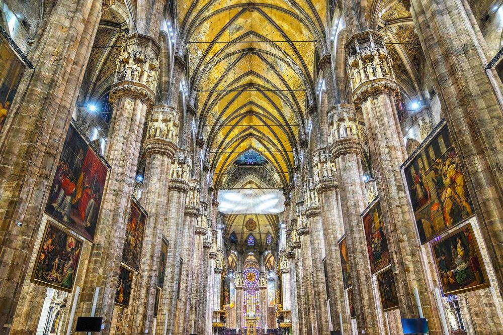

米兰大教堂 Duomo di Milano
工程从1387年开始，粉色 Candoglia 大理石成为标志。为了把大量石材运进城市，当时甚至开挖运河；1805年拿破仑也曾推动大教堂外立面的完成。
现场看什么
外面先看尖塔、扶壁和密集雕像；书里指出正面大量新哥特细节其实来自19世纪。即使不登顶，也能看出这是一座跨越数百年不断“续建”的建筑。
外面先看尖塔、扶壁和密集雕像；书里指出正面大量新哥特细节其实来自19世纪。即使不登顶，也能看出这是一座跨越数百年不断“续建”的建筑。
📍 9/28 · City Walk 第一重点
图源：《Lonely Planet Italy》p.806 · luciano mortula - LGM / Shutterstock · 低分辨率个人行程参考图